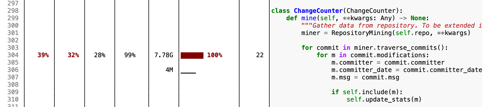

Debugging Performance Issues#
Most chapters of this book deal with functional issues – that is, issues related to the functionality (or its absence) of the code in question. However, debugging can also involve nonfunctional issues, however – performance, usability, reliability, and more. In this chapter, we give a short introduction on how to debug such nonfunctional issues, notably performance issues.
from bookutils import YouTubeVideo
YouTubeVideo("0tMeB9G0uUI")
Prerequisites
This chapter leverages visualization capabilities from the chapter on statistical debugging.
We also show how to debug nonfunctional issues using delta debugging.
import bookutils.setup
import StatisticalDebugger
import DeltaDebugger
Synopsis#
To use the code provided in this chapter, write
>>> from debuggingbook.PerformanceDebugger import <identifier>
and then make use of the following features.
Note: The examples in this section only work after the rest of the cells have been executed.
This chapter provides a class PerformanceDebugger that allows measuring and visualizing the time taken per line in a function.
with PerformanceDebugger(TimeCollector) as debugger:
for i in range(100):
s = remove_html_markup('<b>foo</b>')
The distribution of executed time within each function can be obtained by printing out the debugger:
print(debugger)
238 1% def remove_html_markup(s): # type: ignore
239 1% tag = False
240 1% quote = False
241 1% out = ""
242 0%
243 16% for c in s:
244 15% assert tag or not quote
245 0%
246 15% if c == '<' and not quote:
247 3% tag = True
248 12% elif c == '>' and not quote:
249 2% tag = False
250 8% elif (c == '"' or c == "'") and tag:
251 0% quote = not quote
252 8% elif not tag:
253 7% out = out + c
254 0%
255 3% return out
The sum of all percentages in a function should always be 100%.
These percentages can also be visualized, where darker shades represent higher percentage values:
debugger
238 def remove_html_markup(s): # type: ignore
239 tag = False
240 quote = False
241 out = ""
242
243 for c in s:
244 assert tag or not quote
245
246 if c == '<' and not quote:
247 tag = True
248 elif c == '>' and not quote:
249 tag = False
250 elif (c == '"' or c == "'") and tag:
251 quote = not quote
252 elif not tag:
253 out = out + c
254
255 return out
The abstract MetricCollector class allows subclassing to build more collectors, such as HitCollector.
Measuring Performance#
The solution to debugging performance issues fits in two simple rules:
Measure performance
Break down how individual parts of your code contribute to performance.
The first part, actually measuring performance, is key here. Developers often take elaborated guesses on which aspects of their code impact performance, and think about all possible ways to optimize their code – and at the same time, making it harder to understand, harder to evolve, and harder to maintain. In most cases, such guesses are wrong. Instead, measure performance of your program, identify the very few parts that may need to get improved, and again measure the impact of your changes.
Almost all programming languages offer a way to measure performance and breaking it down to individual parts of the code – a means also known as profiling. Profiling works by measuring the execution time for each function (or even more fine-grained location) in your program. This can be achieved by
Instrumenting or tracing code such that the current time at entry and exit of each function (or line), thus determining the time spent. In Python, this is achieved by profilers like profile or cProfile
Sampling the current function call stack at regular intervals, and thus assessing which functions are most active (= take the most time) during execution. For Python, the scalene profiler works this way.
Pretty much all programming languages support profiling, either through measuring, sampling, or both. As a rule of thumb, interpreted languages more frequently support measuring (as it is easy to implement in an interpreter), while compiled languages more frequently support sampling (because instrumentation requires recompilation). Python is lucky to support both methods.
Tracing Execution Profiles#
Let us illustrate profiling in a simple example. The ChangeCounter class (which we will encounter in the chapter on mining version histories) reads in a version history from a git repository. Yet, it takes more than a minute to read in the debugging book change history:
from ChangeCounter import ChangeCounter, debuggingbook_change_counter # minor dependency
import Timer
with Timer.Timer() as t:
change_counter = debuggingbook_change_counter(ChangeCounter)
t.elapsed_time()
95.47416895799688
The Python profile and cProfile modules offer a simple way to identify the most time-consuming functions. They are invoked using the run() function, whose argument is the command to be profiled. The output reports, for each function encountered:
How often it was called (
ncallscolumn)How much time was spent in the given function, excluding time spent in calls to sub-functions (
tottimecolumn)
How much time was spent in the given function, including time spent in calls to sub-functions (
cumtimecolumn)
Let us have a look at the profile we obtain:
import cProfile
cProfile.run('debuggingbook_change_counter(ChangeCounter)', sort='cumulative')
43450243 function calls (43245180 primitive calls) in 103.436 seconds
Ordered by: cumulative time
ncalls tottime percall cumtime percall filename:lineno(function)
2714 0.016 0.000 157.824 0.058 threading.py:1058(join)
2714 0.050 0.000 157.506 0.058 {method 'join' of '_thread._ThreadHandle' objects}
1409 0.006 0.000 103.775 0.074 repository.py:213(traverse_commits)
2/1 0.000 0.000 103.435 103.435 {built-in method builtins.exec}
2/1 0.002 0.001 103.435 103.435 <string>:1(<module>)
1 0.000 0.000 103.433 103.433 ChangeCounter.ipynb:168(debuggingbook_change_counter)
1 0.000 0.000 103.433 103.433 ChangeCounter.ipynb:51(__init__)
1 0.000 0.000 103.433 103.433 ChangeCounter.ipynb:88(mine)
1 0.000 0.000 103.401 103.401 _base.py:646(__exit__)
1 0.000 0.000 103.401 103.401 thread.py:220(shutdown)
2714/1 0.031 0.000 103.400 103.400 threading.py:1000(_bootstrap)
2714/1 0.046 0.000 103.400 103.400 threading.py:1027(_bootstrap_inner)
2714/1 0.021 0.000 103.400 103.400 ipkernel.py:750(run_closure)
2714/1 13.244 0.005 103.400 103.400 threading.py:983(run)
4/1 0.000 0.000 103.400 103.400 thread.py:70(_worker)
18/4 0.001 0.000 103.400 25.850 {method 'get' of '_queue.SimpleQueue' objects}
1408 0.039 0.000 103.032 0.073 ChangeCounter.ipynb:102(mine_commit)
1408 0.045 0.000 100.615 0.071 commit.py:758(modified_files)
1355 0.214 0.000 98.978 0.073 diff.py:184(diff)
1355 12.267 0.009 78.512 0.058 diff.py:583(_index_from_patch_format)
1355 0.048 0.000 54.381 0.040 cmd.py:102(handle_process_output)
2710/1355 31.919 0.012 53.558 0.040 cmd.py:149(pump_stream)
101 9.849 0.098 21.316 0.211 {built-in method time.sleep}
15521 0.102 0.000 21.288 0.001 diff.py:412(__init__)
14605 0.013 0.000 20.843 0.001 base.py:479(submodules)
14605 0.047 0.000 20.830 0.001 util.py:1274(list_items)
34012/34006 0.056 0.000 20.772 0.001 {method 'extend' of 'list' objects}
43815 0.203 0.000 20.716 0.000 base.py:1581(iter_items)
5426/5201 0.042 0.000 15.940 0.003 {method 'close' of '_io.BufferedReader' objects}
1410 0.137 0.000 9.950 0.007 cmd.py:1540(_call_process)
1410 0.178 0.000 9.774 0.007 cmd.py:1096(execute)
1356 0.034 0.000 9.620 0.007 cmd.py:1003(<lambda>)
1410 0.156 0.000 9.131 0.006 subprocess.py:817(__init__)
1410 0.222 0.000 8.862 0.006 subprocess.py:1808(_execute_child)
74433 0.135 0.000 7.816 0.000 util.py:248(__getattr__)
134748 0.396 0.000 7.637 0.000 cmd.py:1676(__get_object_header)
43815 0.039 0.000 6.873 0.000 base.py:713(commit)
1410 6.802 0.005 6.802 0.005 {built-in method _posixsubprocess.fork_exec}
102235/29210 0.071 0.000 6.520 0.000 tree.py:363(__getitem__)
102235/29210 0.267 0.000 6.484 0.000 tree.py:233(join)
43815 0.018 0.000 6.277 0.000 symbolic.py:389(commit)
43815 0.024 0.000 6.259 0.000 symbolic.py:289(_get_commit)
240146 6.240 0.000 6.240 0.000 {method 'readline' of '_io.BufferedReader' objects}
43815 0.060 0.000 6.235 0.000 symbolic.py:279(_get_object)
76328 0.175 0.000 5.800 0.000 db.py:44(stream)
58420 0.077 0.000 5.728 0.000 tree.py:212(_set_cache_)
76328 0.203 0.000 5.491 0.000 cmd.py:1712(stream_object_data)
58420 0.053 0.000 4.656 0.000 symbolic.py:155(dereference_recursive)
116841 0.104 0.000 4.602 0.000 symbolic.py:268(_get_ref_info)
116841 0.365 0.000 4.498 0.000 symbolic.py:220(_get_ref_info_helper)
58420 0.132 0.000 3.853 0.000 base.py:136(new_from_sha)
14605 0.071 0.000 3.635 0.000 base.py:230(_config_parser)
58420 0.129 0.000 3.332 0.000 db.py:39(info)
58420 0.068 0.000 3.092 0.000 cmd.py:1684(get_object_header)
14605 0.067 0.000 2.476 0.000 fun.py:230(rev_parse)
134743 2.403 0.000 2.463 0.000 {built-in method _io.open}
14605 0.047 0.000 2.401 0.000 fun.py:150(name_to_object)
16013 0.039 0.000 1.941 0.000 commit.py:241(_set_cache_)
23 0.001 0.000 1.693 0.074 base_events.py:1962(_run_once)
23 0.001 0.000 1.690 0.073 selectors.py:540(select)
117161/102342 0.109 0.000 1.539 0.000 config.py:111(assure_data_present)
14605 0.025 0.000 1.539 0.000 util.py:82(__init__)
14711 0.068 0.000 1.525 0.000 config.py:315(__init__)
58420 0.993 0.000 1.482 0.000 fun.py:77(tree_entries_from_data)
14711 0.102 0.000 1.451 0.000 configparser.py:631(__init__)
1410 1.347 0.001 1.347 0.001 {built-in method posix.read}
14711 0.287 0.000 1.160 0.000 configparser.py:1341(__init__)
117161/102451 0.087 0.000 1.125 0.000 config.py:596(read)
23 0.531 0.023 1.099 0.048 {method 'control' of 'select.kqueue' objects}
15051549 0.961 0.000 0.961 0.000 {method 'append' of 'list' objects}
963 0.007 0.000 0.947 0.001 ChangeCounter.ipynb:121(update_stats)
1910 0.001 0.000 0.909 0.000 commit.py:214(content)
1910 0.008 0.000 0.908 0.000 commit.py:222(_get_undecoded_content)
116841 0.504 0.000 0.880 0.000 symbolic.py:172(_check_ref_name_valid)
1895 0.001 0.000 0.791 0.000 base.py:192(data_stream)
1355 0.744 0.001 0.744 0.001 {method 'join' of 'bytes' objects}
14711 0.337 0.000 0.681 0.000 config.py:439(_read)
76328 0.084 0.000 0.613 0.000 cmd.py:451(read)
14711 0.579 0.000 0.579 0.000 {built-in method builtins.dir}
152655 0.518 0.000 0.518 0.000 {method 'read' of '_io.BufferedReader' objects}
60315 0.026 0.000 0.517 0.000 base.py:137(read)
134748 0.038 0.000 0.488 0.000 cmd.py:1663(_get_persistent_cmd)
15521 0.004 0.000 0.487 0.000 ChangeCounter.ipynb:112(include)
37861 0.061 0.000 0.485 0.000 commit.py:276(new_path)
15521 0.013 0.000 0.482 0.000 ChangeCounter.ipynb:176(filter)
16013 0.142 0.000 0.480 0.000 commit.py:782(_deserialize)
117049 0.382 0.000 0.466 0.000 {method 'read' of '_io.TextIOWrapper' objects}
554990 0.227 0.000 0.401 0.000 compat.py:117(safe_decode)
2120178 0.381 0.000 0.381 0.000 {method 'match' of 're.Pattern' objects}
16929 0.008 0.000 0.372 0.000 commit.py:634(committer_date)
903101 0.369 0.000 0.369 0.000 cmd.py:989(__getattribute__)
16929 0.009 0.000 0.353 0.000 commit.py:254(committed_datetime)
158295 0.197 0.000 0.316 0.000 <frozen posixpath>:72(join)
37479 0.063 0.000 0.309 0.000 _local.py:227(__str__)
134748 0.301 0.000 0.301 0.000 {method 'flush' of '_io.BufferedWriter' objects}
2816 0.024 0.000 0.289 0.000 repository.py:245(_iter_commits)
1410 0.042 0.000 0.281 0.000 <frozen os>:750(copy)
194208 0.223 0.000 0.274 0.000 base.py:100(__init__)
58525 0.072 0.000 0.270 0.000 configparser.py:796(get)
1115675 0.208 0.000 0.259 0.000 {built-in method builtins.getattr}
826398 0.157 0.000 0.246 0.000 cmd.py:378(__getattr__)
118314 0.072 0.000 0.243 0.000 base.py:231(__init__)
134748 0.160 0.000 0.238 0.000 cmd.py:1618(_parse_object_header)
58420 0.128 0.000 0.228 0.000 util.py:111(get_object_type_by_name)
1263240 0.226 0.000 0.226 0.000 {method 'decode' of 'bytes' objects}
29608 0.139 0.000 0.216 0.000 util.py:91(mode_str_to_int)
134748 0.120 0.000 0.216 0.000 cmd.py:1649(_prepare_ref)
2209202/2209198 0.202 0.000 0.209 0.000 {built-in method builtins.isinstance}
37480 0.037 0.000 0.199 0.000 _local.py:289(drive)
131764 0.199 0.000 0.199 0.000 {method '__exit__' of '_io._IOBase' objects}
32026 0.054 0.000 0.195 0.000 util.py:326(parse_actor_and_date)
1410 0.064 0.000 0.194 0.000 subprocess.py:1298(_close_pipe_fds)
59828 0.042 0.000 0.188 0.000 tree.py:194(__init__)
118196 0.078 0.000 0.184 0.000 {built-in method builtins.any}
2336808 0.176 0.000 0.176 0.000 {built-in method builtins.ord}
14711 0.067 0.000 0.171 0.000 configparser.py:1264(__init__)
75894 0.052 0.000 0.155 0.000 commit.py:109(__init__)
238290 0.087 0.000 0.154 0.000 <frozen os>:843(fsencode)
16929 0.019 0.000 0.144 0.000 util.py:211(from_timestamp)
103035 0.059 0.000 0.144 0.000 <frozen os>:711(__getitem__)
37478 0.064 0.000 0.143 0.000 _local.py:257(_parse_path)
2714 0.043 0.000 0.143 0.000 threading.py:955(start)
1410 0.065 0.000 0.125 0.000 util.py:537(remove_password_if_present)
2714 0.009 0.000 0.123 0.000 ipkernel.py:774(init_closure)
102339 0.095 0.000 0.121 0.000 util.py:272(join_path)
29210 0.021 0.000 0.115 0.000 base.py:435(index)
2714 0.056 0.000 0.113 0.000 threading.py:869(__init__)
58525 0.058 0.000 0.110 0.000 configparser.py:1176(_unify_values)
350522 0.076 0.000 0.105 0.000 symbolic.py:214(<genexpr>)
392024 0.104 0.000 0.104 0.000 {method 'split' of 'str' objects}
919511 0.097 0.000 0.097 0.000 {built-in method builtins.len}
104340 0.019 0.000 0.093 0.000 <frozen _collections_abc>:873(__iter__)
29210 0.014 0.000 0.093 0.000 base.py:140(__init__)
1410 0.015 0.000 0.092 0.000 subprocess.py:1704(_get_handles)
4230 0.043 0.000 0.092 0.000 contextlib.py:534(callback)
117049 0.059 0.000 0.084 0.000 <frozen codecs>:322(decode)
146306 0.065 0.000 0.084 0.000 config.py:218(__getitem__)
31042 0.015 0.000 0.083 0.000 diff.py:570(_pick_best_path)
29210 0.021 0.000 0.082 0.000 base.py:123(__init__)
14714 0.012 0.000 0.079 0.000 config.py:543(_has_includes)
29210 0.014 0.000 0.079 0.000 base.py:172(_index_path)
58525 0.046 0.000 0.077 0.000 __init__.py:1013(__getitem__)
2714 0.077 0.000 0.077 0.000 {built-in method _thread.start_joinable_thread}
476205 0.077 0.000 0.077 0.000 {method 'encode' of 'str' objects}
104340 0.042 0.000 0.075 0.000 <frozen os>:734(__iter__)
116841 0.059 0.000 0.071 0.000 symbolic.py:51(_git_dir)
93746 0.069 0.000 0.069 0.000 {method 'search' of 're.Pattern' objects}
574473 0.069 0.000 0.069 0.000 {method 'endswith' of 'str' objects}
31042 0.041 0.000 0.069 0.000 diff.py:105(decode_path)
37583 0.021 0.000 0.069 0.000 _local.py:498(__init__)
2714 0.028 0.000 0.068 0.000 threading.py:641(wait)
26790 0.011 0.000 0.068 0.000 subprocess.py:1897(<genexpr>)
205860 0.035 0.000 0.066 0.000 <frozen os>:797(decode)
14710 0.017 0.000 0.065 0.000 config.py:546(_included_paths)
29314 0.023 0.000 0.065 0.000 util.py:309(join_path_native)
177654 0.065 0.000 0.065 0.000 typing.py:426(inner)
43816 0.026 0.000 0.062 0.000 base.py:448(head)
104 0.000 0.000 0.060 0.001 util.py:171(wrapper)
105 0.004 0.000 0.060 0.001 base.py:172(__init__)
104 0.001 0.000 0.060 0.001 base.py:1414(module)
58425 0.042 0.000 0.058 0.000 <frozen importlib._bootstrap>:1390(_handle_fromlist)
166827 0.058 0.000 0.058 0.000 {method 'split' of 'bytes' objects}
32026 0.028 0.000 0.057 0.000 util.py:816(_from_string)
16929 0.052 0.000 0.056 0.000 {built-in method fromtimestamp}
117049 0.045 0.000 0.056 0.000 <frozen codecs>:312(__init__)
1356 0.016 0.000 0.055 0.000 util.py:508(finalize_process)
134460 0.055 0.000 0.055 0.000 {built-in method sys.intern}
103524 0.055 0.000 0.055 0.000 config.py:205(__setitem__)
634015 0.053 0.000 0.053 0.000 {built-in method posix.fspath}
161531 0.033 0.000 0.053 0.000 <frozen posixpath>:42(_get_sep)
103035 0.030 0.000 0.051 0.000 <frozen os>:793(encode)
338507 0.051 0.000 0.051 0.000 {method 'startswith' of 'str' objects}
1356 0.003 0.000 0.051 0.000 subprocess.py:1148(_get_devnull)
1410 0.018 0.000 0.051 0.000 <frozen os>:656(get_exec_path)
255931 0.049 0.000 0.049 0.000 {built-in method binascii.a2b_hex}
16929 0.044 0.000 0.049 0.000 {method 'astimezone' of 'datetime.datetime' objects}
76328 0.031 0.000 0.048 0.000 base.py:128(__new__)
37583 0.030 0.000 0.048 0.000 _local.py:117(__init__)
1356 0.048 0.000 0.048 0.000 {built-in method posix.open}
313952 0.046 0.000 0.046 0.000 {method 'strip' of 'str' objects}
2711 0.019 0.000 0.044 0.000 cmd.py:382(wait)
29210 0.033 0.000 0.044 0.000 symbolic.py:603(to_full_path)
1409 0.010 0.000 0.044 0.000 _base.py:612(result_iterator)
162833 0.043 0.000 0.043 0.000 {method 'group' of 're.Match' objects}
4109 0.008 0.000 0.041 0.000 threading.py:327(wait)
188323 0.041 0.000 0.041 0.000 {built-in method __new__ of type object at 0x1036cbcf0}
37478 0.021 0.000 0.041 0.000 _local.py:237(_format_parsed_parts)
58421 0.025 0.000 0.041 0.000 <frozen importlib._bootstrap>:645(parent)
29210 0.025 0.000 0.040 0.000 configparser.py:908(has_option)
134880 0.040 0.000 0.040 0.000 {method 'write' of '_io.BufferedWriter' objects}
58420 0.025 0.000 0.039 0.000 base.py:35(__new__)
32026 0.032 0.000 0.039 0.000 util.py:146(utctz_to_altz)
52 0.000 0.000 0.038 0.001 base.py:1437(module_exists)
15521 0.015 0.000 0.036 0.000 commit.py:596(committer)
1409 0.000 0.000 0.036 0.000 git.py:110(get_list_commits)
43817 0.031 0.000 0.036 0.000 head.py:50(__init__)
90150 0.022 0.000 0.035 0.000 diff.py:535(b_path)
1387 0.027 0.000 0.034 0.000 parse.py:469(urlsplit)
105104 0.034 0.000 0.034 0.000 typing.py:1944(_no_init_or_replace_init)
1408 0.014 0.000 0.033 0.000 _base.py:314(_result_or_cancel)
73609 0.032 0.000 0.032 0.000 {built-in method builtins.setattr}
19172/16448 0.033 0.000 0.032 0.000 {method 'acquire' of '_thread.lock' objects}
4230 0.032 0.000 0.032 0.000 contextlib.py:479(_create_cb_wrapper)
1360 0.007 0.000 0.031 0.000 cmd.py:375(__del__)
176931 0.031 0.000 0.031 0.000 {method 'rstrip' of 'str' objects}
13608/1410 0.015 0.000 0.030 0.000 cmd.py:1494(_unpack_args)
147700 0.029 0.000 0.029 0.000 {method 'startswith' of 'bytes' objects}
140433 0.029 0.000 0.029 0.000 {built-in method binascii.b2a_hex}
2713 0.007 0.000 0.028 0.000 subprocess.py:1275(wait)
2714 0.005 0.000 0.028 0.000 threading.py:620(set)
146751 0.028 0.000 0.028 0.000 {built-in method builtins.hasattr}
1410 0.017 0.000 0.026 0.000 contextlib.py:571(__exit__)
29315 0.020 0.000 0.026 0.000 configparser.py:683(sections)
59674 0.025 0.000 0.025 0.000 config.py:208(add)
117049 0.025 0.000 0.025 0.000 {built-in method _codecs.utf_8_decode}
79573 0.024 0.000 0.024 0.000 {method 'groups' of 're.Match' objects}
76328 0.023 0.000 0.023 0.000 base.py:132(__init__)
1360 0.006 0.000 0.023 0.000 cmd.py:340(_terminate)
1355 0.023 0.000 0.023 0.000 {method 'finditer' of 're.Pattern' objects}
37583 0.017 0.000 0.023 0.000 _local.py:505(__new__)
58420 0.022 0.000 0.022 0.000 base.py:60(size)
2713 0.004 0.000 0.021 0.000 subprocess.py:2034(_wait)
4122 0.005 0.000 0.021 0.000 threading.py:428(notify_all)
16929 0.020 0.000 0.020 0.000 util.py:191(__init__)
88567 0.020 0.000 0.020 0.000 {method 'rpartition' of 'str' objects}
37478 0.013 0.000 0.019 0.000 _local.py:277(_raw_path)
1410 0.018 0.000 0.019 0.000 warnings.py:488(__enter__)
1409 0.002 0.000 0.019 0.000 commit.py:512(_iter_from_process_or_stream)
146438 0.018 0.000 0.018 0.000 {function _OMD.__getitem__ at 0x114154cc0}
29210 0.013 0.000 0.018 0.000 util.py:42(sm_name)
58420 0.018 0.000 0.018 0.000 base.py:38(__init__)
4230 0.014 0.000 0.018 0.000 contextlib.py:552(_push_exit_callback)
1408 0.013 0.000 0.017 0.000 commit.py:801(_parse_diff)
25413 0.012 0.000 0.017 0.000 conf.py:52(get)
1408 0.008 0.000 0.016 0.000 _base.py:428(result)
7050 0.016 0.000 0.016 0.000 {built-in method posix.close}
211200 0.016 0.000 0.016 0.000 typing.py:2371(cast)
1358 0.003 0.000 0.015 0.000 subprocess.py:2021(_try_wait)
2714 0.008 0.000 0.015 0.000 threading.py:592(__init__)
29210 0.010 0.000 0.015 0.000 base.py:168(__ne__)
30146 0.011 0.000 0.015 0.000 parse.py:193(_userinfo)
15073 0.005 0.000 0.015 0.000 parse.py:160(password)
89488 0.015 0.000 0.015 0.000 {method 'lower' of 'str' objects}
4140 0.005 0.000 0.014 0.000 threading.py:398(notify)
29634 0.014 0.000 0.014 0.000 {method 'sub' of 're.Pattern' objects}
58525 0.014 0.000 0.014 0.000 __init__.py:1003(__init__)
418/210 0.001 0.000 0.013 0.000 fun.py:99(find_submodule_git_dir)
1408 0.002 0.000 0.013 0.000 thread.py:165(submit)
2714 0.009 0.000 0.013 0.000 _weakrefset.py:85(add)
76328 0.013 0.000 0.013 0.000 cmd.py:440(__init__)
147410 0.013 0.000 0.013 0.000 config.py:435(optionxform)
4284 0.013 0.000 0.013 0.000 {built-in method posix.pipe}
12486/11070 0.008 0.000 0.013 0.000 threading.py:303(__enter__)
80789 0.013 0.000 0.013 0.000 {method 'readline' of '_io.BytesIO' objects}
37369 0.010 0.000 0.013 0.000 <frozen posixpath>:131(splitdrive)
1362 0.013 0.000 0.013 0.000 {built-in method posix.waitpid}
76328 0.012 0.000 0.012 0.000 cmd.py:527(__del__)
14605 0.009 0.000 0.012 0.000 util.py:1177(__new__)
1409 0.004 0.000 0.012 0.000 __init__.py:1512(info)
58525 0.012 0.000 0.012 0.000 base.py:379(common_dir)
2822 0.002 0.000 0.012 0.000 {built-in method builtins.next}
2714 0.012 0.000 0.012 0.000 threading.py:1267(_make_invoke_excepthook)
117049 0.011 0.000 0.011 0.000 <frozen codecs>:263(__init__)
105 0.000 0.000 0.011 0.000 base.py:658(config_reader)
3132 0.004 0.000 0.011 0.000 __init__.py:1772(isEnabledFor)
105 0.000 0.000 0.011 0.000 base.py:681(_config_reader)
1 0.000 0.000 0.011 0.011 _base.py:583(map)
2732 0.010 0.000 0.011 0.000 threading.py:1136(is_alive)
1411 0.006 0.000 0.010 0.000 contextlib.py:303(helper)
5428 0.008 0.000 0.010 0.000 threading.py:1429(current_thread)
4123 0.007 0.000 0.010 0.000 threading.py:281(__init__)
16929 0.008 0.000 0.010 0.000 mailmap.py:16(get_developer)
37478 0.010 0.000 0.010 0.000 {built-in method posix._path_splitroot_ex}
2 0.000 0.000 0.010 0.005 repository.py:179(_prep_repo)
1410 0.009 0.000 0.009 0.000 contextlib.py:485(__init__)
1410 0.002 0.000 0.009 0.000 warnings.py:170(simplefilter)
1411 0.002 0.000 0.009 0.000 contextlib.py:145(__exit__)
2714 0.007 0.000 0.009 0.000 threading.py:1049(_delete)
58420 0.009 0.000 0.009 0.000 base.py:52(type)
15073 0.003 0.000 0.009 0.000 parse.py:156(username)
14605 0.005 0.000 0.008 0.000 base.py:162(__eq__)
2710 0.008 0.000 0.008 0.000 threading.py:843(_newname)
15521 0.005 0.000 0.008 0.000 commit.py:661(msg)
1 0.000 0.000 0.008 0.008 base.py:756(iter_commits)
1 0.000 0.000 0.008 0.008 commit.py:299(iter_items)
14356 0.005 0.000 0.008 0.000 diff.py:531(a_path)
1408 0.001 0.000 0.007 0.000 thread.py:184(_adjust_thread_count)
37479 0.007 0.000 0.007 0.000 {method 'join' of 'str' objects}
64052 0.007 0.000 0.007 0.000 {built-in method builtins.abs}
58420 0.007 0.000 0.007 0.000 base.py:42(binsha)
3028 0.005 0.000 0.007 0.000 <frozen posixpath>:176(dirname)
73555 0.007 0.000 0.007 0.000 {built-in method builtins.callable}
1515 0.001 0.000 0.007 0.000 <frozen abc>:117(__instancecheck__)
523 0.001 0.000 0.007 0.000 fun.py:57(is_git_dir)
6827 0.007 0.000 0.007 0.000 {method 'release' of '_thread.lock' objects}
3132 0.003 0.000 0.007 0.000 __init__.py:1826(_is_disabled)
1410 0.007 0.000 0.007 0.000 {built-in method posix.access}
12824 0.007 0.000 0.007 0.000 cmd.py:567(__getattribute)
1410 0.004 0.000 0.007 0.000 warnings.py:188(_add_filter)
1408 0.002 0.000 0.007 0.000 threading.py:472(acquire)
14711 0.004 0.000 0.006 0.000 configparser.py:1383(__iter__)
963 0.006 0.000 0.006 0.000 ChangeCounter.ipynb:137(update_size)
12486 0.005 0.000 0.006 0.000 threading.py:306(__exit__)
1515 0.006 0.000 0.006 0.000 {built-in method _abc._abc_instancecheck}
2 0.000 0.000 0.006 0.003 git.py:77(clear)
2 0.000 0.000 0.006 0.003 cmd.py:1727(clear_cache)
1411 0.002 0.000 0.006 0.000 contextlib.py:136(__enter__)
1408 0.001 0.000 0.006 0.000 thread.py:54(run)
29315 0.006 0.000 0.006 0.000 {method 'keys' of 'collections.OrderedDict' objects}
963 0.004 0.000 0.006 0.000 ChangeCounter.ipynb:145(update_changes)
58525 0.005 0.000 0.005 0.000 configparser.py:383(before_get)
5685 0.003 0.000 0.005 0.000 base.py:186(hexsha)
4230 0.002 0.000 0.005 0.000 contextlib.py:481(_exit_wrapper)
67716 0.005 0.000 0.005 0.000 util.py:204(dst)
43817 0.005 0.000 0.005 0.000 symbolic.py:76(__init__)
29418 0.005 0.000 0.005 0.000 base.py:370(working_tree_dir)
26825 0.005 0.000 0.005 0.000 {method 'get' of 'dict' objects}
16129 0.005 0.000 0.005 0.000 {method 'pop' of 'list' objects}
105 0.000 0.000 0.005 0.000 _local.py:539(read_text)
29314 0.005 0.000 0.005 0.000 util.py:303(to_native_path_linux)
6841 0.003 0.000 0.005 0.000 threading.py:318(_is_owned)
16013 0.005 0.000 0.005 0.000 {method 'read' of '_io.BytesIO' objects}
52195 0.004 0.000 0.004 0.000 util.py:198(utcoffset)
105 0.000 0.000 0.004 0.000 _abc.py:628(read_text)
17480 0.004 0.000 0.004 0.000 {method 'strip' of 'bytes' objects}
2714 0.003 0.000 0.004 0.000 _weakrefset.py:39(_remove)
4128 0.004 0.000 0.004 0.000 {method 'add' of 'set' objects}
8363 0.004 0.000 0.004 0.000 {method 'append' of 'collections.deque' objects}
105 0.000 0.000 0.004 0.000 _local.py:529(open)
1411 0.002 0.000 0.004 0.000 contextlib.py:108(__init__)
1470 0.004 0.000 0.004 0.000 {built-in method posix.stat}
1408 0.002 0.000 0.004 0.000 conf.py:272(is_commit_filtered)
15521 0.004 0.000 0.004 0.000 {method 'end' of 're.Match' objects}
32026 0.004 0.000 0.004 0.000 util.py:797(__init__)
1408 0.001 0.000 0.004 0.000 commit.py:569(author)
5632 0.004 0.000 0.004 0.000 {method '__enter__' of '_thread.RLock' objects}
1 0.000 0.000 0.004 0.004 git.py:39(__init__)
1387 0.003 0.000 0.004 0.000 parse.py:119(_coerce_args)
1 0.000 0.000 0.003 0.003 git.py:86(_open_repository)
1408 0.001 0.000 0.003 0.000 _base.py:328(__init__)
13570 0.003 0.000 0.003 0.000 {built-in method _thread.get_ident}
1048 0.001 0.000 0.003 0.000 <frozen genericpath>:48(isdir)
1408 0.002 0.000 0.003 0.000 commit.py:560(hash)
107 0.000 0.000 0.003 0.000 _local.py:166(__fspath__)
1408 0.001 0.000 0.003 0.000 _base.py:537(set_result)
37479 0.003 0.000 0.003 0.000 _local.py:307(_tail)
2710 0.002 0.000 0.003 0.000 threading.py:1162(daemon)
14711 0.002 0.000 0.003 0.000 config.py:378(_acquire_lock)
1723 0.001 0.000 0.003 0.000 __init__.py:1500(debug)
14166 0.003 0.000 0.003 0.000 {method 'start' of 're.Match' objects}
1461 0.001 0.000 0.003 0.000 commit.py:670(parents)
37480 0.003 0.000 0.003 0.000 _local.py:298(root)
2710 0.001 0.000 0.003 0.000 base.py:178(__str__)
25380 0.003 0.000 0.003 0.000 {method 'endswith' of 'bytes' objects}
1408 0.001 0.000 0.003 0.000 _base.py:364(cancel)
14605 0.003 0.000 0.003 0.000 fun.py:219(to_commit)
13774 0.003 0.000 0.003 0.000 {method '__exit__' of '_thread.RLock' objects}
2711 0.002 0.000 0.003 0.000 encoding.py:1(force_bytes)
24 0.000 0.000 0.003 0.000 events.py:87(_run)
9875 0.002 0.000 0.002 0.000 {method 'replace' of 'str' objects}
1410 0.002 0.000 0.002 0.000 {method 'remove' of 'list' objects}
15521 0.002 0.000 0.002 0.000 commit.py:155(__init__)
24 0.000 0.000 0.002 0.000 {method 'run' of '_contextvars.Context' objects}
1410 0.002 0.000 0.002 0.000 <frozen _collections_abc>:823(keys)
1410 0.002 0.000 0.002 0.000 {built-in method sys.exception}
14605 0.002 0.000 0.002 0.000 util.py:1180(__init__)
4109 0.001 0.000 0.002 0.000 threading.py:315(_acquire_restore)
2716 0.002 0.000 0.002 0.000 subprocess.py:1249(poll)
14711 0.002 0.000 0.002 0.000 {built-in method builtins.iter}
4109 0.001 0.000 0.002 0.000 threading.py:312(_release_save)
1410 0.002 0.000 0.002 0.000 {built-in method builtins.sorted}
14711 0.002 0.000 0.002 0.000 configparser.py:1224(converters)
4230 0.002 0.000 0.002 0.000 {method 'pop' of 'collections.deque' objects}
2711 0.001 0.000 0.002 0.000 cmd.py:994(__getattr__)
2714 0.001 0.000 0.002 0.000 threading.py:1020(_set_ident)
1358 0.001 0.000 0.002 0.000 subprocess.py:1978(_handle_exitstatus)
315 0.001 0.000 0.002 0.000 util.py:525(expand_path)
6854/6382 0.002 0.000 0.002 0.000 {method '__enter__' of '_thread.lock' objects}
5428 0.002 0.000 0.002 0.000 threading.py:1147(daemon)
14709 0.002 0.000 0.002 0.000 base.py:388(bare)
16929 0.002 0.000 0.002 0.000 developer.py:27(__init__)
313 0.000 0.000 0.002 0.000 cmd.py:891(is_cygwin)
1466 0.001 0.000 0.002 0.000 cmd.py:299(dashify)
1410 0.002 0.000 0.002 0.000 contextlib.py:568(__enter__)
1408 0.001 0.000 0.001 0.000 _base.py:497(set_running_or_notify_cancel)
105 0.000 0.000 0.001 0.000 configparser.py:857(getboolean)
2714 0.001 0.000 0.001 0.000 {method 'discard' of 'set' objects}
11042 0.001 0.000 0.001 0.000 {method '__exit__' of '_thread.lock' objects}
313 0.001 0.000 0.001 0.000 util.py:492(is_cygwin_git)
1358 0.001 0.000 0.001 0.000 subprocess.py:1133(__del__)
2714 0.001 0.000 0.001 0.000 threading.py:1024(_set_native_id)
5475 0.001 0.000 0.001 0.000 {method 'insert' of 'list' objects}
105 0.000 0.000 0.001 0.000 configparser.py:836(_get_conv)
1410 0.001 0.000 0.001 0.000 warnings.py:509(__exit__)
4109 0.001 0.000 0.001 0.000 {method 'remove' of 'collections.deque' objects}
10870 0.001 0.000 0.001 0.000 threading.py:605(is_set)
105 0.000 0.000 0.001 0.000 configparser.py:833(_get)
11 0.000 0.000 0.001 0.000 iostream.py:118(_run_event_pipe_gc)
5652 0.001 0.000 0.001 0.000 {method 'items' of 'dict' objects}
1410 0.001 0.000 0.001 0.000 cmd.py:1483(transform_kwargs)
105 0.000 0.000 0.001 0.000 __init__.py:174(search)
105 0.000 0.000 0.001 0.000 <frozen genericpath>:16(exists)
1387 0.001 0.000 0.001 0.000 <string>:1(<lambda>)
3 0.000 0.000 0.001 0.000 config.py:717(write)
5420 0.001 0.000 0.001 0.000 diff.py:235(<genexpr>)
105 0.000 0.000 0.001 0.000 db.py:34(__init__)
5428 0.001 0.000 0.001 0.000 threading.py:1112(ident)
1 0.000 0.000 0.001 0.001 base.py:696(config_writer)
105 0.001 0.000 0.001 0.000 __init__.py:330(_compile)
317 0.000 0.000 0.001 0.000 <frozen genericpath>:36(isfile)
1387 0.001 0.000 0.001 0.000 {method 'find' of 'str' objects}
2/1 0.000 0.000 0.001 0.001 config.py:127(flush_changes)
4230 0.001 0.000 0.001 0.000 {built-in method _warnings._filters_mutated}
4 0.000 0.000 0.001 0.000 util.py:1058(_obtain_lock)
4 0.000 0.000 0.001 0.000 util.py:1034(_obtain_lock_or_raise)
2 0.000 0.000 0.001 0.000 zmqstream.py:573(_handle_events)
105 0.000 0.000 0.001 0.000 _local.py:148(__truediv__)
1410 0.001 0.000 0.001 0.000 subprocess.py:274(_cleanup)
4109 0.001 0.000 0.001 0.000 {built-in method _thread.allocate_lock}
105 0.000 0.000 0.001 0.000 cmd.py:964(__init__)
1410 0.001 0.000 0.001 0.000 {method 'rfind' of 'bytes' objects}
1408 0.000 0.000 0.001 0.000 git.py:140(get_commit_from_gitpython)
1 0.000 0.000 0.001 0.001 asyncio.py:206(_handle_events)
4074 0.001 0.000 0.001 0.000 subprocess.py:1987(_internal_poll)
1410 0.001 0.000 0.001 0.000 cmd.py:335(__init__)
2 0.000 0.000 0.001 0.000 zmqstream.py:614(_handle_recv)
1049 0.001 0.000 0.001 0.000 {built-in method posix._path_normpath}
22 0.000 0.000 0.001 0.000 tasks.py:703(sleep)
1 0.000 0.000 0.001 0.001 config.py:873(set_value)
2710 0.001 0.000 0.001 0.000 {built-in method _thread.daemon_threads_allowed}
1410 0.001 0.000 0.001 0.000 warnings.py:462(__init__)
105 0.000 0.000 0.001 0.000 loose.py:77(__init__)
2 0.000 0.000 0.001 0.000 zmqstream.py:546(_run_callback)
1618 0.000 0.000 0.000 0.000 {method 'rfind' of 'str' objects}
315 0.000 0.000 0.000 0.000 <frozen posixpath>:376(abspath)
107 0.000 0.000 0.000 0.000 _abc.py:130(with_segments)
105 0.000 0.000 0.000 0.000 <frozen _collections_abc>:815(__contains__)
1464 0.000 0.000 0.000 0.000 {method 'update' of 'dict' objects}
2732 0.000 0.000 0.000 0.000 {method 'is_done' of '_thread._ThreadHandle' objects}
104 0.000 0.000 0.000 0.000 base.py:288(abspath)
2 0.000 0.000 0.000 0.000 iostream.py:157(_handle_event)
2714 0.000 0.000 0.000 0.000 {built-in method _thread.get_native_id}
1408 0.000 0.000 0.000 0.000 threading.py:122(RLock)
2 0.000 0.000 0.000 0.000 iostream.py:276(<lambda>)
1408 0.000 0.000 0.000 0.000 _base.py:398(__get_result)
1387 0.000 0.000 0.000 0.000 {method 'lstrip' of 'str' objects}
1515 0.000 0.000 0.000 0.000 {method 'pop' of 'dict' objects}
1410 0.000 0.000 0.000 0.000 {built-in method sys.audit}
11 0.000 0.000 0.000 0.000 futures.py:310(_set_result_unless_cancelled)
1358 0.000 0.000 0.000 0.000 {built-in method posix.WIFSTOPPED}
2820 0.000 0.000 0.000 0.000 subprocess.py:1327(_on_error_fd_closer)
3 0.000 0.000 0.000 0.000 config.py:671(_write)
106 0.000 0.000 0.000 0.000 base.py:631(_get_config_path)
11 0.000 0.000 0.000 0.000 {method 'set_result' of '_asyncio.Future' objects}
11 0.000 0.000 0.000 0.000 iostream.py:127(_event_pipe_gc)
45 0.000 0.000 0.000 0.000 config.py:675(write_section)
315 0.000 0.000 0.000 0.000 <frozen posixpath>:229(expanduser)
1387 0.000 0.000 0.000 0.000 parse.py:421(_checknetloc)
2837 0.000 0.000 0.000 0.000 {built-in method time.monotonic}
12 0.000 0.000 0.000 0.000 base_events.py:823(call_soon)
1358 0.000 0.000 0.000 0.000 {built-in method posix.waitstatus_to_exitcode}
208 0.000 0.000 0.000 0.000 <frozen posixpath>:61(isabs)
1413 0.000 0.000 0.000 0.000 {method 'put' of '_queue.SimpleQueue' objects}
1 0.000 0.000 0.000 0.000 config.py:410(release)
105 0.000 0.000 0.000 0.000 base.py:113(__init__)
315 0.000 0.000 0.000 0.000 <frozen posixpath>:290(expandvars)
12 0.000 0.000 0.000 0.000 base_events.py:852(_call_soon)
1410 0.000 0.000 0.000 0.000 <frozen _collections_abc>:850(__init__)
104 0.000 0.000 0.000 0.000 base.py:351(__ne__)
58 0.000 0.000 0.000 0.000 cmd.py:1467(transform_kwarg)
1355 0.000 0.000 0.000 0.000 diff.py:172(_process_diff_args)
105 0.000 0.000 0.000 0.000 configparser.py:1196(_convert_to_boolean)
11 0.000 0.000 0.000 0.000 base_events.py:781(call_later)
1412 0.000 0.000 0.000 0.000 {method 'get_nowait' of '_queue.SimpleQueue' objects}
1 0.000 0.000 0.000 0.000 {method 'disable' of '_lsprof.Profiler' objects}
1 0.000 0.000 0.000 0.000 git.py:92(_discover_main_branch)
102 0.000 0.000 0.000 0.000 {built-in method posix.getppid}
1408 0.000 0.000 0.000 0.000 _base.py:337(_invoke_callbacks)
1387 0.000 0.000 0.000 0.000 parse.py:108(_noop)
1408 0.000 0.000 0.000 0.000 thread.py:48(__init__)
1 0.000 0.000 0.000 0.000 base.py:1043(active_branch)
943 0.000 0.000 0.000 0.000 {built-in method _stat.S_ISDIR}
963 0.000 0.000 0.000 0.000 ChangeCounter.ipynb:155(update_elems)
2 0.000 0.000 0.000 0.000 iostream.py:278(_really_send)
1408 0.000 0.000 0.000 0.000 commit.py:536(__init__)
47 0.000 0.000 0.000 0.000 base_events.py:772(time)
1 0.000 0.000 0.000 0.000 symbolic.py:504(reference)
1 0.000 0.000 0.000 0.000 symbolic.py:407(_get_reference)
2 0.000 0.000 0.000 0.000 socket.py:700(send_multipart)
23 0.000 0.000 0.000 0.000 events.py:36(__init__)
11 0.000 0.000 0.000 0.000 base_events.py:805(call_at)
11 0.000 0.000 0.000 0.000 base_events.py:457(create_future)
4 0.000 0.000 0.000 0.000 attrsettr.py:43(__getattr__)
11 0.000 0.000 0.000 0.000 events.py:157(cancel)
1408 0.000 0.000 0.000 0.000 {method '_is_owned' of '_thread.RLock' objects}
8 0.000 0.000 0.000 0.000 {built-in method posix.lstat}
4 0.000 0.000 0.000 0.000 attrsettr.py:66(_get_attr_opt)
45 0.000 0.000 0.000 0.000 config.py:242(items_all)
88 0.000 0.000 0.000 0.000 config.py:868(_value_to_string)
2 0.000 0.000 0.000 0.000 zmqstream.py:653(_rebuild_io_state)
18/14 0.000 0.000 0.000 0.000 threading.py:519(release)
1 0.000 0.000 0.000 0.000 ioloop.py:750(_run_callback)
1 0.000 0.000 0.000 0.000 zmqstream.py:684(<lambda>)
2 0.000 0.000 0.000 0.000 _local.py:664(resolve)
14 0.000 0.000 0.000 0.000 socket.py:623(send)
1 0.000 0.000 0.000 0.000 util.py:1065(_release_lock)
11 0.000 0.000 0.000 0.000 events.py:113(__init__)
1 0.000 0.000 0.000 0.000 util.py:245(rmfile)
1 0.000 0.000 0.000 0.000 conf.py:85(sanity_check_filters)
2 0.000 0.000 0.000 0.000 zmqstream.py:676(_update_handler)
104 0.000 0.000 0.000 0.000 base.py:346(__eq__)
1 0.000 0.000 0.000 0.000 {built-in method posix.remove}
132 0.000 0.000 0.000 0.000 config.py:235(getall)
2 0.000 0.000 0.000 0.000 <frozen posixpath>:391(realpath)
1 0.000 0.000 0.000 0.000 symbolic.py:886(from_path)
14 0.000 0.000 0.000 0.000 enum.py:1596(__or__)
11 0.000 0.000 0.000 0.000 {built-in method _heapq.heappop}
1 0.000 0.000 0.000 0.000 repository.py:44(__init__)
210 0.000 0.000 0.000 0.000 {built-in method _io.text_encoding}
60 0.000 0.000 0.000 0.000 enum.py:1589(_get_value)
1 0.000 0.000 0.000 0.000 conf.py:302(_check_timezones)
211 0.000 0.000 0.000 0.000 {built-in method _stat.S_ISREG}
3 0.000 0.000 0.000 0.000 config.py:238(items)
2 0.000 0.000 0.000 0.000 subprocess.py:2224(terminate)
2 0.000 0.000 0.000 0.000 _local.py:800(expanduser)
2 0.000 0.000 0.000 0.000 subprocess.py:2192(send_signal)
1 0.000 0.000 0.000 0.000 conf.py:310(_replace_timezone)
2 0.000 0.000 0.000 0.000 socket.py:771(recv_multipart)
1 0.000 0.000 0.000 0.000 thread.py:127(__init__)
59 0.000 0.000 0.000 0.000 {method 'find' of 'bytes' objects}
1 0.000 0.000 0.000 0.000 conf.py:26(__init__)
88 0.000 0.000 0.000 0.000 encoding.py:11(force_text)
6 0.000 0.000 0.000 0.000 enum.py:1607(__and__)
26 0.000 0.000 0.000 0.000 enum.py:695(__call__)
107 0.000 0.000 0.000 0.000 {built-in method builtins.issubclass}
59 0.000 0.000 0.000 0.000 {method 'rstrip' of 'bytes' objects}
1 0.000 0.000 0.000 0.000 conf.py:202(build_args)
2 0.000 0.000 0.000 0.000 {built-in method posix.kill}
11 0.000 0.000 0.000 0.000 {built-in method math.isnan}
4 0.000 0.000 0.000 0.000 weakref.py:369(remove)
1 0.000 0.000 0.000 0.000 {method 'replace' of 'datetime.datetime' objects}
24 0.000 0.000 0.000 0.000 selector_events.py:740(_process_events)
11 0.000 0.000 0.000 0.000 events.py:73(cancel)
1 0.000 0.000 0.000 0.000 conf.py:72(_check_only_one_from_commit)
105 0.000 0.000 0.000 0.000 base.py:70(__init__)
26 0.000 0.000 0.000 0.000 enum.py:1156(__new__)
2 0.000 0.000 0.000 0.000 typing.py:1374(__instancecheck__)
2 0.000 0.000 0.000 0.000 {method 'close' of '_io.BufferedWriter' objects}
1 0.000 0.000 0.000 0.000 asyncio.py:231(add_callback)
1 0.000 0.000 0.000 0.000 threading.py:461(__init__)
2 0.000 0.000 0.000 0.000 typing.py:1665(__subclasscheck__)
1 0.000 0.000 0.000 0.000 reference.py:54(__init__)
12 0.000 0.000 0.000 0.000 {built-in method _contextvars.copy_context}
1 0.000 0.000 0.000 0.000 git.py:343(__del__)
2 0.000 0.000 0.000 0.000 zmqstream.py:532(sending)
24 0.000 0.000 0.000 0.000 {built-in method builtins.max}
26 0.000 0.000 0.000 0.000 {method 'popleft' of 'collections.deque' objects}
45 0.000 0.000 0.000 0.000 base_events.py:2060(get_debug)
11 0.000 0.000 0.000 0.000 {built-in method _heapq.heappush}
4 0.000 0.000 0.000 0.000 typing.py:1443(__hash__)
4 0.000 0.000 0.000 0.000 weakref.py:427(__setitem__)
1 0.000 0.000 0.000 0.000 _local.py:346(name)
2 0.000 0.000 0.000 0.000 queue.py:115(empty)
1 0.000 0.000 0.000 0.000 util.py:1013(__init__)
11 0.000 0.000 0.000 0.000 {method 'cancelled' of '_asyncio.Future' objects}
1 0.000 0.000 0.000 0.000 configparser.py:922(set)
2 0.000 0.000 0.000 0.000 iostream.py:216(_check_mp_mode)
2 0.000 0.000 0.000 0.000 repository.py:154(_is_remote)
2 0.000 0.000 0.000 0.000 <frozen abc>:121(__subclasscheck__)
2 0.000 0.000 0.000 0.000 iostream.py:213(_is_master_process)
12 0.000 0.000 0.000 0.000 {built-in method _asyncio.get_running_loop}
1 0.000 0.000 0.000 0.000 conf.py:79(_check_only_one_to_commit)
23 0.000 0.000 0.000 0.000 base_events.py:554(_check_closed)
8 0.000 0.000 0.000 0.000 conf.py:43(set_value)
1 0.000 0.000 0.000 0.000 __init__.py:230(utcoffset)
1 0.000 0.000 0.000 0.000 base_events.py:1947(_add_callback)
1 0.000 0.000 0.000 0.000 reference.py:120(name)
2 0.000 0.000 0.000 0.000 util.py:1020(_lock_file_path)
2 0.000 0.000 0.000 0.000 conf.py:192(only_one_filter)
11 0.000 0.000 0.000 0.000 base_events.py:1957(_timer_handle_cancelled)
8 0.000 0.000 0.000 0.000 {built-in method _stat.S_ISLNK}
1 0.000 0.000 0.000 0.000 conf.py:175(get_ending_commit)
1 0.000 0.000 0.000 0.000 conf.py:61(_sanity_check_repos)
3 0.000 0.000 0.000 0.000 config.py:763(_assure_writable)
4 0.000 0.000 0.000 0.000 {method 'upper' of 'str' objects}
1 0.000 0.000 0.000 0.000 {method 'reverse' of 'list' objects}
1 0.000 0.000 0.000 0.000 conf.py:151(get_starting_commit)
1 0.000 0.000 0.000 0.000 conf.py:123(_check_correct_filters_order)
2 0.000 0.000 0.000 0.000 queue.py:267(_qsize)
2 0.000 0.000 0.000 0.000 {built-in method _abc._abc_subclasscheck}
1 0.000 0.000 0.000 0.000 {method 'isascii' of 'str' objects}
3 0.000 0.000 0.000 0.000 git.py:63(repo)
6 0.000 0.000 0.000 0.000 util.py:1024(_has_lock)
4 0.000 0.000 0.000 0.000 zmqstream.py:528(receiving)
4 0.000 0.000 0.000 0.000 {built-in method builtins.hash}
2 0.000 0.000 0.000 0.000 iostream.py:255(closed)
4 0.000 0.000 0.000 0.000 config.py:771(read_only)
1 0.000 0.000 0.000 0.000 {method 'isalpha' of 'str' objects}
1 0.000 0.000 0.000 0.000 configparser.py:702(has_section)
2 0.000 0.000 0.000 0.000 {built-in method posix.getpid}
1 0.000 0.000 0.000 0.000 <frozen codecs>:189(__init__)
1 0.000 0.000 0.000 0.000 configparser.py:386(before_set)
1 0.000 0.000 0.000 0.000 _base.py:643(__enter__)
Yes, that’s an awful lot of functions, but we can quickly narrow things down. The cumtime column is sorted by largest values first. We see that the debuggingbook_change_counter() method at the top takes up all the time – but this is not surprising, since it is the method we called in the first place. This calls a method mine() in the ChangeCounter class, which does all the work.
The next places are more interesting: almost all time is spent in a single method, named modifications(). This method determines the difference between two versions, which is an expensive operation; this is also supported by the observation that half of the time is spent in a diff() method.
This profile thus already gets us a hint on how to improve performance: Rather than computing the diff between versions for every version, we could do so on demand (and possibly cache results so we don’t have to compute them twice). Alas, this (slow) functionality is part of the
underlying PyDriller Python package, so we cannot fix this within the ChangeCounter class. But we could file a bug with the developers, suggesting a patch to improve performance.
Sampling Execution Profiles#
Instrumenting code is precise, but it is also slow. An alternate way to measure performance is to sample in regular intervals which functions are currently active – for instance, by examining the current function call stack. The more frequently a function is sampled as active, the more time is spent in that function.
One profiler for Python that implements such sampling is Scalene – a high-performance, high-precision CPU, GPU, and memory profiler for Python. We can invoke it on our example as follows:
$ scalene --html test.py > scalene-out.html
where test.py is a script that again invokes
debuggingbook_change_counter(ChangeCounter)
The output of scalene is sent to a HTML file (here, scalene-out.html) which is organized by lines – that is, for each line, we see how much it contributed to overall execution time. Opening the output scalene-out.html in a HTML browser, we see these lines:

As with cProfile, above, we identify the mine() method in the ChangeCounter class as the main performance hog – and in the mine() method, it is the iteration over all modifications that takes all the time. Adding the option --profile-all to scalene would extend the profile to all executed code, including the pydriller third-party library.
Besides relying on sampling rather that tracing (which is more efficient) and breaking down execution time by line, scalene also provides additional information on memory usage and more. If cProfile is not sufficient, then scalene will bring profiling to the next level.
Improving Performance#
Identifying a culprit is not always that easy. Notably, when the first set of obvious performance hogs is fixed, it becomes more and more difficult to squeeze out additional performance – and, as stated above, such optimization may be in conflict with readability and maintainability of your code. Here are some simple ways to improve performance:
Efficient algorithms. For many tasks, the simplest algorithm is not always the best performing one. Consider alternatives that may be more efficient, and measure whether they pay off.
Efficient data types. Remember that certain operations, such as looking up whether an element is contained, may take different amounts of time depending on the data structure. In Python, a query like
x in xstakes (mostly) constant time ifxsis a set, but linear time ifxsis a list; these differences become significant as the size ofxsgrows.Efficient modules. In Python, most frequently used modules (or at least parts of) are implemented in C, which is way more efficient than plain Python. Rely on existing modules whenever possible. Or implement your own, after having measured that this may pay off.
These are all things you can already use during programming – and also set up your code such that exchanging, say, one data type by another will still be possible later. This is best achieved by hiding implementation details (such as the used data types) behind an abstract interface used by your clients.
But beyond these points, remember the famous words by Donald E. Knuth:
from bookutils import quiz
Quiz
This quote should always remind us that after a good design, you should always first measure and then optimize.
Building a Profiler#
Having discussed profilers from a user perspective, let us now dive into how they are actually implemented. It turns out we can use most of our existing infrastructure to implement a simple tracing profiler with only a few lines of code.
The program we will apply our profiler on is – surprise! – our ongoing example, remove_html_markup(). Our aim is to understand how much time is spent in each line of the code (such that we have a new feature on top of Python cProfile).
from Intro_Debugging import remove_html_markup
print_content(inspect.getsource(remove_html_markup), '.py',
start_line_number=238)
238 def remove_html_markup(s): # type: ignore
239 tag = False
240 quote = False
241 out = ""
242
243 for c in s:
244 assert tag or not quote
245
246 if c == '<' and not quote:
247 tag = True
248 elif c == '>' and not quote:
249 tag = False
250 elif (c == '"' or c == "'") and tag:
251 quote = not quote
252 elif not tag:
253 out = out + c
254
255 return out
We introduce a class PerformanceTracer that tracks, for each line in the code:
how often it was executed (
hits), andhow much time was spent during its execution (
time).
To this end, we make use of our Timer class, which measures time, and the Tracer class from the chapter on tracing, which allows us to track every line of the program as it is being executed.
from Tracer import Tracer
In PerformanceTracker, the attributes hits and time are mappings indexed by unique locations – that is, pairs of function name and line number.
Location = Tuple[str, int]
class PerformanceTracer(Tracer):
"""Trace time and #hits for individual program lines"""
def __init__(self) -> None:
"""Constructor."""
super().__init__()
self.reset_timer()
self.hits: Dict[Location, int] = {}
self.time: Dict[Location, float] = {}
def reset_timer(self) -> None:
self.timer = Timer.Timer()
As common in this book, we want to use PerformanceTracer in a with-block around the function call(s) to be tracked:
with PerformanceTracer() as perf_tracer:
function(...)
When entering the with block (__enter__()), we reset all timers. Also, coming from the __enter__() method of the superclass Tracer, we enable tracing through the traceit() method.
from types import FrameType
class PerformanceTracer(PerformanceTracer):
def __enter__(self) -> Any:
"""Enter a `with` block."""
super().__enter__()
self.reset_timer()
return self
The traceit() method extracts the current location. It increases the corresponding hits value by 1, and adds the elapsed time to the corresponding time.
class PerformanceTracer(PerformanceTracer):
def traceit(self, frame: FrameType, event: str, arg: Any) -> None:
"""Tracing function; called for every line."""
t = self.timer.elapsed_time()
location = (frame.f_code.co_name, frame.f_lineno)
self.hits.setdefault(location, 0)
self.time.setdefault(location, 0.0)
self.hits[location] += 1
self.time[location] += t
self.reset_timer()
This is it already. We can now determine where most time is spent in remove_html_markup(). We invoke it 10,000 times such that we can average over runs:
with PerformanceTracer() as perf_tracer:
for i in range(10000):
s = remove_html_markup('<b>foo</b>')
Here are the hits. For every line executed, we see how often it was executed. The most executed line is the for loop with 110,000 hits – once for each of the 10 characters in <b>foo</b>, once for the final check, and all of this 10,000 times.
perf_tracer.hits
{('__init__', 17): 1,
('__init__', 19): 1,
('clock', 8): 1,
('clock', 12): 2,
('__init__', 20): 2,
('remove_html_markup', 238): 10000,
('remove_html_markup', 239): 10000,
('remove_html_markup', 240): 10000,
('remove_html_markup', 241): 10000,
('remove_html_markup', 243): 110000,
('remove_html_markup', 244): 100000,
('remove_html_markup', 246): 100000,
('remove_html_markup', 247): 20000,
('remove_html_markup', 248): 80000,
('remove_html_markup', 250): 60000,
('remove_html_markup', 252): 60000,
('remove_html_markup', 249): 20000,
('remove_html_markup', 253): 30000,
('remove_html_markup', 255): 20000}
The time attribute collects how much time was spent in each line. Within the loop, again, the for statement takes the most time. The other lines show some variability, though.
perf_tracer.time
{('__init__', 17): 0.00024116699933074415,
('__init__', 19): 1.3329845387488604e-06,
('clock', 8): 2.4999899324029684e-06,
('clock', 12): 1.7909915186464787e-06,
('__init__', 20): 1.334003172814846e-06,
('remove_html_markup', 238): 0.007917946233646944,
('remove_html_markup', 239): 0.00618785762344487,
('remove_html_markup', 240): 0.006357173289870843,
('remove_html_markup', 241): 0.006170973560074344,
('remove_html_markup', 243): 0.06910131918266416,
('remove_html_markup', 244): 0.0627616380515974,
('remove_html_markup', 246): 0.06305116802104749,
('remove_html_markup', 247): 0.012841210089391097,
('remove_html_markup', 248): 0.04974727283115499,
('remove_html_markup', 250): 0.03712841047672555,
('remove_html_markup', 252): 0.037927715689875185,
('remove_html_markup', 249): 0.012593008199473843,
('remove_html_markup', 253): 0.01872212707530707,
('remove_html_markup', 255): 0.013112093147356063}
For a full profiler, these numbers would now be sorted and printed in a table, much like cProfile does. However, we will borrow some material from previous chapters and annotate our code accordingly.
Visualizing Performance Metrics#
In the chapter on statistical debugging, we have encountered the CoverageCollector class, which collects line and function coverage during execution, using a collect() method that is invoked for every line. We will repurpose this class to collect arbitrary metrics on the lines executed, notably time taken.
Collecting Time Spent#
from StatisticalDebugger import CoverageCollector, SpectrumDebugger
The MetricCollector class is an abstract superclass that provides an interface to access a particular metric.
class MetricCollector(CoverageCollector):
"""Abstract superclass for collecting line-specific metrics"""
def metric(self, event: Any) -> Optional[float]:
"""Return a metric for an event, or none."""
return None
def all_metrics(self, func: str) -> List[float]:
"""Return all metric for a function `func`."""
return []
Given these metrics, we can also compute sums and maxima for a single function.
class MetricCollector(MetricCollector):
def total(self, func: str) -> float:
return sum(self.all_metrics(func))
def maximum(self, func: str) -> float:
return max(self.all_metrics(func))
Let us instantiate this superclass into TimeCollector – a subclass that measures time. This is modeled after our PerformanceTracer class, above; notably, the time attribute serves the same role.
class TimeCollector(MetricCollector):
"""Collect time executed for each line"""
def __init__(self) -> None:
"""Constructor"""
super().__init__()
self.reset_timer()
self.time: Dict[Location, float] = {}
self.add_items_to_ignore([Timer.Timer, Timer.clock])
def collect(self, frame: FrameType, event: str, arg: Any) -> None:
"""Invoked for every line executed. Accumulate time spent."""
t = self.timer.elapsed_time()
super().collect(frame, event, arg)
location = (frame.f_code.co_name, frame.f_lineno)
self.time.setdefault(location, 0.0)
self.time[location] += t
self.reset_timer()
def reset_timer(self) -> None:
self.timer = Timer.Timer()
def __enter__(self) -> Any:
super().__enter__()
self.reset_timer()
return self
The metric() and all_metrics() methods accumulate the metric (time taken) for an individual function:
class TimeCollector(TimeCollector):
def metric(self, location: Any) -> Optional[float]:
if location in self.time:
return self.time[location]
else:
return None
def all_metrics(self, func: str) -> List[float]:
return [time
for (func_name, lineno), time in self.time.items()
if func_name == func]
Here’s how to use TimeCollector() – again, in a with block:
with TimeCollector() as collector:
for i in range(100):
s = remove_html_markup('<b>foo</b>')
The time attribute holds the time spent in each line:
for location, time_spent in collector.time.items():
print(location, time_spent)
('remove_html_markup', 238) 0.00015183707000687718
('remove_html_markup', 239) 0.00010900790221057832
('remove_html_markup', 240) 0.00011175306281074882
('remove_html_markup', 241) 0.00010875475709326565
('remove_html_markup', 243) 0.001230446039699018
('remove_html_markup', 244) 0.0011077363742515445
('remove_html_markup', 246) 0.0011040171957574785
('remove_html_markup', 247) 0.00022176094353199005
('remove_html_markup', 248) 0.0008924873836804181
('remove_html_markup', 250) 0.0006938762671779841
('remove_html_markup', 252) 0.000667455984512344
('remove_html_markup', 249) 0.0002219062007497996
('remove_html_markup', 253) 0.00032781687332317233
('remove_html_markup', 255) 0.00023653166135773063
And we can also create a total for an entire function:
collector.total('remove_html_markup')
0.00718538771616295
Visualizing Time Spent#
Let us now go and visualize these numbers in a simple form. The idea is to assign each line a color whose saturation indicates the time spent in that line relative to the time spent in the function overall – the higher the fraction, the darker the line. We create a MetricDebugger class built as a specialization of SpectrumDebugger, in which suspiciousness() and color() are repurposed to show these metrics.
class MetricDebugger(SpectrumDebugger):
"""Visualize a metric"""
def metric(self, location: Location) -> float:
sum = 0.0
for outcome in self.collectors:
for collector in self.collectors[outcome]:
assert isinstance(collector, MetricCollector)
m = collector.metric(location)
if m is not None:
sum += m # type: ignore
return sum
def total(self, func_name: str) -> float:
total = 0.0
for outcome in self.collectors:
for collector in self.collectors[outcome]:
assert isinstance(collector, MetricCollector)
total += sum(collector.all_metrics(func_name))
return total
def maximum(self, func_name: str) -> float:
maximum = 0.0
for outcome in self.collectors:
for collector in self.collectors[outcome]:
assert isinstance(collector, MetricCollector)
maximum = max(maximum,
max(collector.all_metrics(func_name)))
return maximum
def suspiciousness(self, location: Location) -> float:
func_name, _ = location
return self.metric(location) / self.total(func_name)
def color(self, location: Location) -> str:
func_name, _ = location
hue = 240 # blue
saturation = 100 # fully saturated
darkness = self.metric(location) / self.maximum(func_name)
lightness = 100 - darkness * 25
return f"hsl({hue}, {saturation}%, {lightness}%)"
def tooltip(self, location: Location) -> str:
return f"{super().tooltip(location)} {self.metric(location)}"
We can now introduce PerformanceDebugger as a subclass of MetricDebugger, using an arbitrary MetricCollector (such as TimeCollector) to obtain the metric we want to visualize.
class PerformanceDebugger(MetricDebugger):
"""Collect and visualize a metric"""
def __init__(self, collector_class: Type, log: bool = False):
assert issubclass(collector_class, MetricCollector)
super().__init__(collector_class, log=log)
With PerformanceDebugger, we inherit all the capabilities of SpectrumDebugger, such as showing the (relative) percentage of time spent in a table. We see that the for condition and the following assert take most of the time, followed by the first condition.
with PerformanceDebugger(TimeCollector) as debugger:
for i in range(100):
s = remove_html_markup('<b>foo</b>')
print(debugger)
238 1% def remove_html_markup(s): # type: ignore
239 1% tag = False
240 1% quote = False
241 1% out = ""
242 0%
243 16% for c in s:
244 15% assert tag or not quote
245 0%
246 15% if c == '<' and not quote:
247 3% tag = True
248 12% elif c == '>' and not quote:
249 3% tag = False
250 9% elif (c == '"' or c == "'") and tag:
251 0% quote = not quote
252 9% elif not tag:
253 4% out = out + c
254 0%
255 3% return out
However, we can also visualize these percentages, using shades of blue to indicate those lines most time spent in:
debugger
238 def remove_html_markup(s): # type: ignore
239 tag = False
240 quote = False
241 out = ""
242
243 for c in s:
244 assert tag or not quote
245
246 if c == '<' and not quote:
247 tag = True
248 elif c == '>' and not quote:
249 tag = False
250 elif (c == '"' or c == "'") and tag:
251 quote = not quote
252 elif not tag:
253 out = out + c
254
255 return out
Other Metrics#
Our framework is flexible enough to collect (and visualize) arbitrary metrics. This HitCollector class, for instance, collects how often a line is being executed.
class HitCollector(MetricCollector):
"""Collect how often a line is executed"""
def __init__(self) -> None:
super().__init__()
self.hits: Dict[Location, int] = {}
def collect(self, frame: FrameType, event: str, arg: Any) -> None:
super().collect(frame, event, arg)
location = (frame.f_code.co_name, frame.f_lineno)
self.hits.setdefault(location, 0)
self.hits[location] += 1
def metric(self, location: Location) -> Optional[int]:
if location in self.hits:
return self.hits[location]
else:
return None
def all_metrics(self, func: str) -> List[float]:
return [hits
for (func_name, lineno), hits in self.hits.items()
if func_name == func]
We can plug in this class into PerformanceDebugger to obtain a distribution of lines executed:
with PerformanceDebugger(HitCollector) as debugger:
for i in range(100):
s = remove_html_markup('<b>foo</b>')
In total, during this call to remove_html_markup(), there are 6,400 lines executed:
debugger.total('remove_html_markup')
6400.0
Again, we can visualize the distribution as a table and using colors. We can see how the shade gets lighter in the lower part of the loop as individual conditions have been met.
print(debugger)
238 1% def remove_html_markup(s): # type: ignore
239 1% tag = False
240 1% quote = False
241 1% out = ""
242 0%
243 17% for c in s:
244 15% assert tag or not quote
245 0%
246 15% if c == '<' and not quote:
247 3% tag = True
248 12% elif c == '>' and not quote:
249 3% tag = False
250 9% elif (c == '"' or c == "'") and tag:
251 0% quote = not quote
252 9% elif not tag:
253 4% out = out + c
254 0%
255 3% return out
debugger
238 def remove_html_markup(s): # type: ignore
239 tag = False
240 quote = False
241 out = ""
242
243 for c in s:
244 assert tag or not quote
245
246 if c == '<' and not quote:
247 tag = True
248 elif c == '>' and not quote:
249 tag = False
250 elif (c == '"' or c == "'") and tag:
251 quote = not quote
252 elif not tag:
253 out = out + c
254
255 return out
Integrating with Delta Debugging#
Besides identifying causes for performance issues in the code, one may also search for causes in the input, using Delta Debugging. This can be useful if one does not immediately want to embark into investigating the code, but maybe first determine external influences that are related to performance issues.
Here is a variant of remove_html_markup() that introduces a (rather obvious) performance issue.
import time
def remove_html_markup_ampersand(s: str) -> str:
tag = False
quote = False
out = ""
for c in s:
assert tag or not quote
if c == '&':
time.sleep(0.1) # <-- the obvious performance issue
if c == '<' and not quote:
tag = True
elif c == '>' and not quote:
tag = False
elif (c == '"' or c == "'") and tag:
quote = not quote
elif not tag:
out = out + c
return out
We can easily trigger this issue by measuring time taken:
with Timer.Timer() as t:
remove_html_markup_ampersand('&&&')
t.elapsed_time()
0.30978220800170675
Let us set up a test that checks whether the performance issue is present.
def remove_html_test(s: str) -> None:
with Timer.Timer() as t:
remove_html_markup_ampersand(s)
assert t.elapsed_time() < 0.1
We can now apply delta debugging to determine a minimum input that causes the failure:
s_fail = '<b>foo&</b>'
with DeltaDebugger.DeltaDebugger() as dd:
remove_html_test(s_fail)
dd.min_args()
{'s': '&'}
For performance issues, however, a minimal input is often not enough to highlight the failure cause. This is because short inputs tend to take less processing time than longer inputs, which increases the risks of a spurious diagnosis. A better alternative is to compute a maximum input where the issue does not occur:
s_pass = dd.max_args()
s_pass
{'s': '<b>fooamp;</b>'}
We see that the culprit character (the &) is removed. This tells us the failure-inducing difference – or, more precisely, the cause for the performance issue.
Lessons Learned#
To measure performance,
instrument the code such that the time taken per function (or line) is collected; or
sample the execution that at regular intervals, the active call stack is collected.
To make code performant, focus on efficient algorithms, efficient data types, and sufficient abstraction such that you can replace them by alternatives.
Beyond efficient algorithms and data types, do not optimize before measuring.
Next Steps#
This chapter concludes the part on abstracting failures. The next part will focus on
Background#
Scalene is a high-performance, high-precision CPU, GPU, and memory profiler for Python. In contrast to the standard Python cProfile profiler, it uses sampling instead of instrumentation or relying on Python’s tracing facilities; and it also supports line-by-line profiling. Scalene might be the tool of choice if you want to go beyond basic profiling.
The Wikipedia articles on profiling and performance analysis tools provide several additional resources on profiling tools and how to apply them in practice.
Exercises#
Exercise 1: Profiling Memory Usage#
The Python tracemalloc module allows tracking memory usage during execution. Between tracemalloc.start() and tracemalloc.end(), use tracemalloc.get_traced_memory() to obtain how much memory is currently being consumed:
import tracemalloc
tracemalloc.start()
current_size, peak_size = tracemalloc.get_traced_memory()
current_size
20551
tracemalloc.stop()
Create a subclass of MetricCollector named MemoryCollector. Make it measure the memory consumption before and after each line executed (0 if negative), and visualize the impact of individual lines on memory. Create an appropriate test program that (temporarily) consumes larger amounts of memory.
Exercise 2: Statistical Performance Debugging#
In a similar way as we integrated a binary “performance test” with delta debugging, we can also integrate such a test with other techniques. Combining a performance test with Statistical Debugging, for instance, will highlight those lines whose execution correlates with low performance. But then, the performance test need not be binary, as with functional pass/fail tests – you can also weight individual lines by how much they impact performance. Create a variant of StatisticalDebugger that reflects the impact of individual lines on an arbitrary (summarized) performance metric.